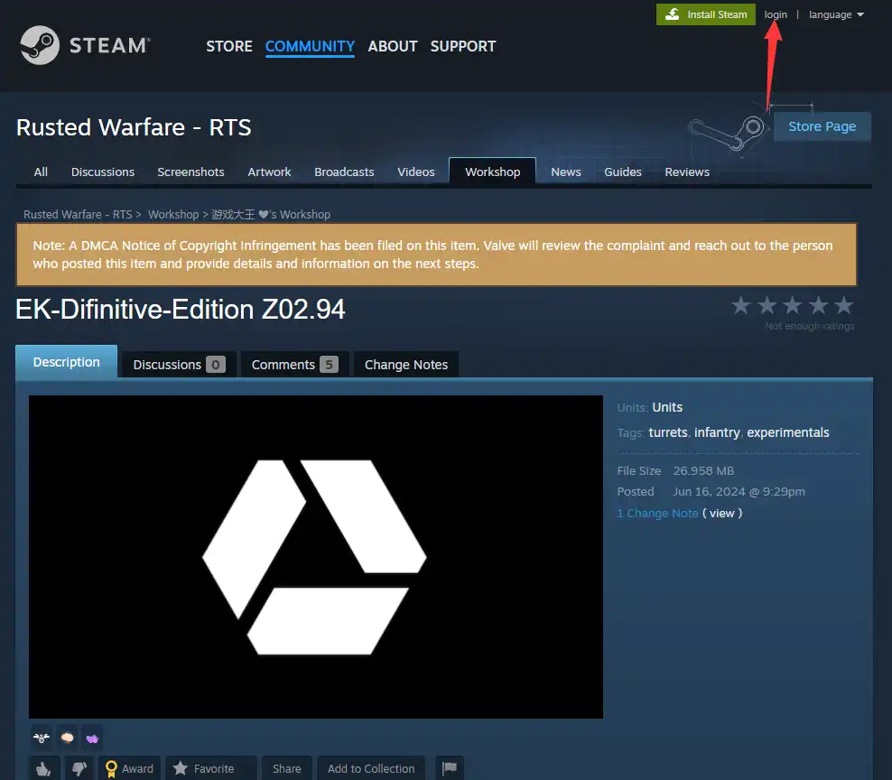
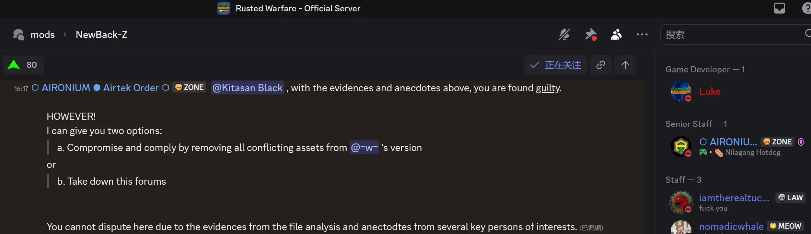

Redirect link for English users
↓🤡🤡🤡🤡🤡↓


👆🤣👆🤣👆🤣
欢迎访问本站！
——感谢您愿意花宝贵的时间阅读我这篇文章。我是ice-v5，铁锈战争ice汉化版的作者，你在官服看到ice-v123类型的都是我汉化版的玩家，从小我就对电子游戏感兴趣，能靠给游戏做mod，让大家玩到有意思的内容，我觉得还挺开心的。
——某天，我离开了旧mod的制作组，去修一个老玩意EK模组。当时我就想，这EK虽然看着不咋地（平衡崩了的，bug奇多的，甚至贴图错位，而且当时现行的汉化版品质极低，我为了精翻这个模组花了很多字斟句酌的时间），但来一次彻底的重构，说不定能重获新生。可是谁能想到，这一决定，给我招来一堆横殃飞祸。
——接下来的两年多，我几乎把全部精力都花在制作这个mod上。我每天坐在电脑前，眼睛紧紧盯着屏幕，一行行地改代码，一个漏洞一个漏洞的修复，单位也是一批一批的加。有时候为了实现一个新功能，我甚至能熬个通宵，这都是老群友有目共睹的。好不容易，这个mod才开始有了起色，在圈子里也算是慢慢有了名气（我甚至去优化了单位英文的描述，我新加的单位也统统有加英文文本，到现在这个mod还在Steam创意工坊有史以来最热门前十挂着，订阅率超过了点击率的50%，也算是享誉海外了）。
——可树大招风，不知道从哪儿冒出来一群歹徒，就盯着我的mod眼红。他们在网上到处造谣，手段要多歹毒有多歹毒。一会儿在B站上发视频说我这mod没有原作授权，是偷来的；一会儿又在游戏群里造谣，说我的mod是盗版。最过分的是，他们还修改我的版本，做了一大堆故意加了漏洞和画风不符合的贴图还有不平衡的单位的版本来损害模组本身的名誉。我就纳闷了，我一没偷二没抢，勤勤恳恳做mod，怎么就招来这些无妄之灾？
——很多人不知道，我一直守护着这虚拟世界里铁圈的宁静。之前在官服，我发现有傻逼在列表卖黄片，这种祸害玩家的事我忍不了。我靠着自己懂点技术，直接把他们这些坏人的服务器全部打下线了。还有一回，有网暴集团想强行挤进我们的游戏社区，打算用不正当手段篡夺社区。我联合了几个胆子大的朋友，费了好大劲儿，才给他们清扫出去。平时只要有新手来问我mod制作的事儿，我都是知无不言，教他们写代码，给他们讲逻辑。在以前的时候我算是全圈公认的大善人，我自认为没做过一件亏心事，可那些狼狈为奸的歹徒还是不肯放过我。
——这些狼狈为奸的歹徒串通一气，在自媒体平台上弄了一堆假消息来抹黑我，有甚者用我的头像和昵称四处引战。从此以后，网上全是对我的负面消息，好多玩家都信以为真，反过来骂我（甚至有人因为盗版的平衡问题来骂我的版本）。那段时间，我心里特别憋屈，每天看着那些评论，简直是刷新人类道德的下限。他们总是造谣我要毁灭铁圈，而这件事从未发生。
——后来我也是没了办法，再加上高三备战高考的压力，我离开了我心心念念的EK模组。结果最大最恶最绝望的事情发生了，碑怖炫蛆把我的群和模组全篡夺了，还把在外国的社群运营者骗了，然后宣传那个外国人才是作者（他是社群运营者，不是mod开发者的证据），说我是没有授权私自做的盗版，实际上"没有原始授权"这是最常用于剥夺开发者辛勤耕耘的果实的伎俩，因为自媒体只要造谣就能达成他们的目的，而开发者们大多都不善于沟通。
——事到如今，我只能用我最后的手段捍卫自己的尊严，尽管方法并不仁慈，但是我也是迫不得已而为之，对被本站打扰到的玩家我深感抱歉。
为众人抱薪者，不可使其冻毙于风雪
为自由开路者，不可使其困顿于荆棘
为生民立命者，不可使其殒殁于无声
为苍生治水者，不可使其沉溺于湖海
为愚昧启蒙者，不可使其困惑于无知
为当下奋斗者，不可使其淹没于尘埃
为未来奠基者，不可使其从宽而入窄
悲兮叹兮，若善者不得善终，恶者可更恶乎？
↓👇铁圈真正的恶人👇↓